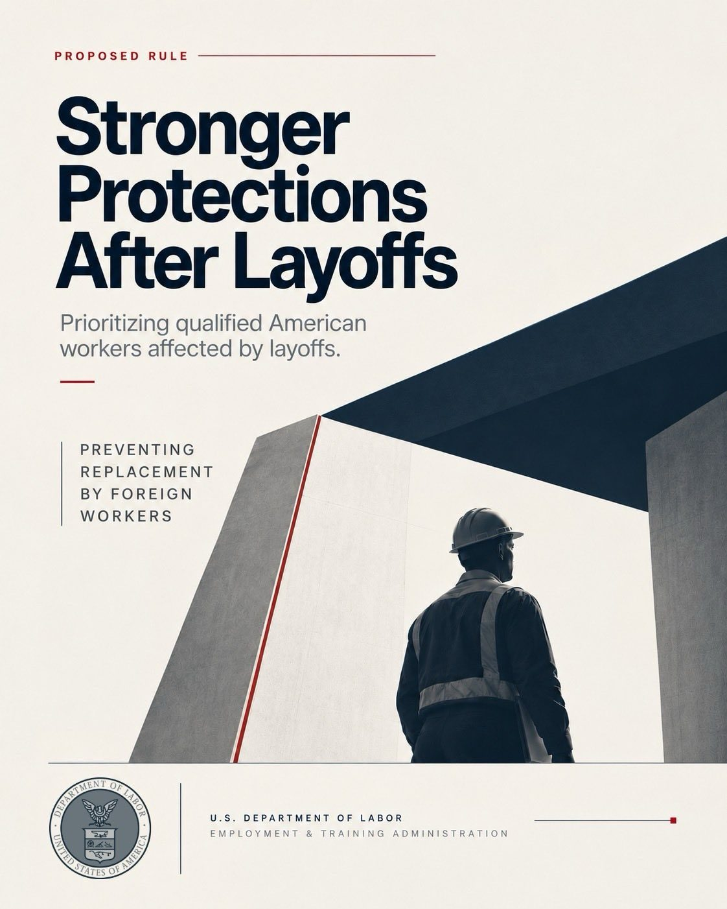
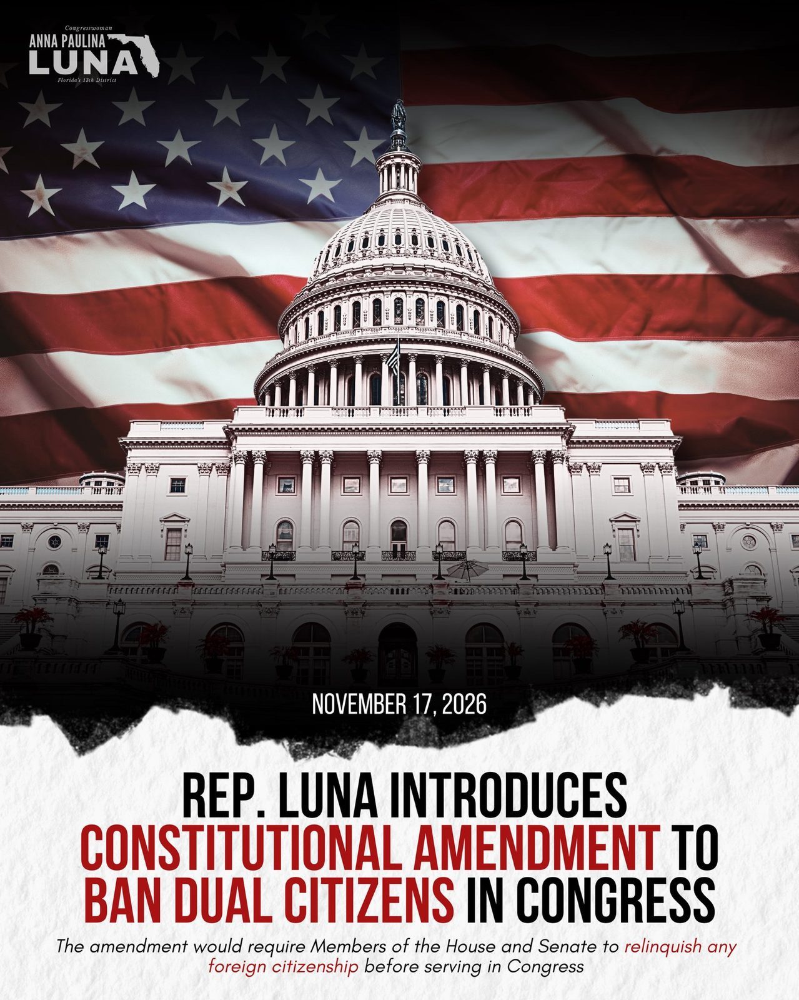
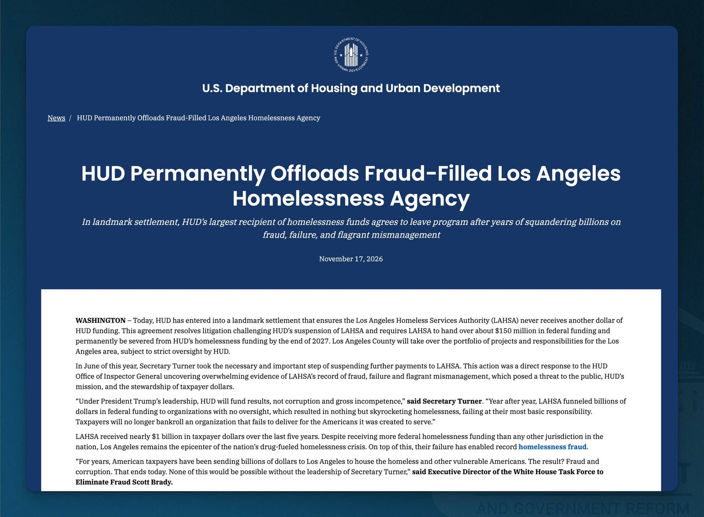

The #FBI issued a FLASH advisory warning that cybercriminals and state-aligned hackers are exploiting ARTEX, a super intelligence-powered penetration testing framework, to automate attacks against businesses and organizations worldwide. ARTEX can accelerate intrusions from initial targeting to privileged access in under three hours. It was used in the October ConnectWise supply-chain compromise, which exposed Microsoft 365 customer environments and involved attempted authentication against more than 2,250 downstream tenants.
The FBI is urging businesses and organizations to strengthen access controls, monitor suspicious automated activity, and report potential compromises to https://www.ic3.gov/.
Read more here: https://www.ic3.gov/CSA/2026/261113.pdf
In ~30 days: 1 million workflow runs, serving 170+ unique use cases.
AWS's (@awscloud) new case study highlights how Chainlink Confidential Compute is unlocking private onchain finance, with strong results recorded during early access.
Delivered through the Chainlink Runtime Environment (CRE), Confidential Compute combines AWS Nitro Enclaves with novel threshold cryptography to protect sensitive data, business logic, and credentials in onchain workflows.
For institutions, this enables private payments, confidential trading & risk management, and compliance checks that prove eligibility without exposing personal data—addressing critical requirements for institutional adoption.
Circle is honored to support a @WorldBankGroup initiative, together with @Citi, to explore regulated stablecoin infrastructure and its potential to improve the cost efficiency, speed, and transparency of payments and financial settlements for its clients.
The work will explore how U.S. dollar-denominated regulated stablecoins and blockchain-based payment rails can operate alongside and expand existing payment and correspondent banking systems.
Securitize has completed its acquisition of @RiverOneHQ.
There are nearly $300 billion in stablecoins, and businesses everywhere that need financing. River One was built to bring the two together.
Digital dollars are ready for real work.
🇺🇸🇸🇬 JUST IN: DBS and JPMorgan launch 24/7 Singapore-US transfers of tokenized dollar deposits.
JUST IN: 🇭🇰 Hong Kong and SWIFT test tokenized bank deposits to enable 24/7 international payments and compete with crypto stablecoins.
@CFTC Announces Agenda for December Roundtable on 24/7 Trading: https://www.cftc.gov/PressRoom/PressReleases/9327-26
JUST IN: Circle partners with Citi Bank and World Bank Group
.@USDOL just proposed the first comprehensive PERM reform in nearly 20 years.
It includes UNPRECEDENTED layoff protections for American Workers, like making sure qualified laid-off Americans get FIRST consideration for jobs instead of being passed over for foreign workers.
Employers must now recruit in good faith, advertise for at least 90 days, and prove a real workforce shortage before looking abroad.

Dual citizens have no business serving in Congress. You cannot have allegiance to two countries at the same time, and the American people deserve representatives whose loyalty is to the United States and the United States alone.
Serving in Congress means putting the American people first, and there should be zero question about whose interests our elected officials serve.

.@SecretaryTurner on @HUDgov's recent action to ensure public housing goes to everyday Americans—NOT illegals: We're closing the decades-old mixed-status roommate loophole. From this time forward, anyone receiving taxpayer-funded housing must verify they are a legal citizen.
▶ Watch on XPresident Trump's immigration policies have resulted in:
— The second-lowest traffic fatality rate on record; — A double-digit decline in drug overdose deaths (which have declined for 18 months under @POTUS); — The largest annual drop in violent crime ever recorded; — An 80% decrease in migrant deaths; — 157,000 of the 300,000 unaccompanied migrant children lost under Biden being found; and — 7,200+ children being rescued from traffickers or predators (a 42% increase over Biden).
Of course, the Fake News refuses to cover it, but President Trump's immigration policy is saving lives.
BREAKING: A cyberattack hit 178 major organizations, including Zoom, CNN, BBC, Fox News, HSBC, Ledger, Equifax, Salesforce, IKEA and Air France-KLM, by loading malware on the Optimizely Web platform, exposing visitors to scripts built to steal payment data and exploit iOS devices, per security firm Report URI.
Banking and finance was the hardest-hit sector, with 32 organizations affected, including the UK's HSBC across multiple markets such as the US, Hong Kong, Mexico, Singapore, Australia and the UAE.
BREAKING: NSA Net, the US National Security Agency's highly classified network, has gone down and is experiencing an ongoing outage, per CNN.
The network allows employees to communicate classified information internally.
This follows several other major outages this week.
JUST IN: Pentagon invites 7 teams to a December live-fire competition to test directed energy lasers designed to shoot down drones.
BREAKING: AI reportedly uncovers critical security bug in Java, which is used by about 90% of Fortune 500 companies.
BREAKING: OpenAI announces partnership with NATO to protect allied cyber networks using advanced AI models.
BREAKING: The International Ice Hockey Federation announces a cyberattack has taken its platforms offline.
#BREAKING: Apple's corporate offices reportedly offline amid widespread outage, employees say.
JUST IN - The NSA's highly classified internal communications network has gone down: reports
JUST IN: 🇪🇺 Europe's largest natural gas supplier 'Equinor' says it is under cyberattack.
JUST IN - iCloud, App Store and Apple Pay hit by a widespread Apple outage.
JUST IN: $13 trillion asset manager Charles Schwab's website goes down.
Over the past week, I’ve been overwhelmed by the love and support of friends, industry colleagues, and people I've never met. Thank you to everyone who has shown kindness to my family and me. It means the world to me.
I came to the United States 53 years ago, and becoming an American citizen is one of the greatest gifts and proudest moments of my life. NVIDIA has been my life’s work. Building it into the company it is today alongside my colleagues has been a privilege and an honor. Nowhere but in America could a company like NVIDIA be possible. I love our country, and I love NVIDIA.
I did not live up to the standards expected of everyone at NVIDIA, and I have made serious mistakes in my personal life. I created problems for the Board that I deeply regret. I own my mistakes completely, and I am committed to cooperating with the Board’s independent investigation.
Since my departure, I’ve seen an outpouring of calls from NVIDIA’s employees, investors, business partners, and customers for me to return as CEO. Many continue to reach out to me directly as the company navigates complex technology, market, competitive, and geopolitical dynamics. NVIDIA is a once-in-a-generation company. If the Board of Directors decides that my return is in the best interest of our shareholders, our employees, the company, and America, I would be honored to answer these calls and return as CEO.
Thank you again to everyone who has shared their good wishes. I am profoundly humbled by your support. To my family: I love you, and I will spend the rest of my life being worthy of yours.
Jensen
JUST IN: Nvidia $NVDA projects $130,000,000,000 in revenue for Q4.
BREAKING: US Homebuilder Sentiment falls to its lowest level since 2012 as higher mortgage rates, costs, and weak Consumer Confidence led to more builders cutting prices.
46% of builders reported cutting prices in November, the highest share in post-pandemic era.
Buyer traffic fell to its lowest level in 15 years, excluding the start of the Pandemic in 2020.
The US housing market is coming to a halt.
A new car now costs a record high $51,000.
🚨 HOLY CRAP! For the FIRST TIME EVER, most of the Pentagon's assets just passed their audits.
Fourteen of the Defense Department's 25 reporting units got clean opinions, up from 11 last year. Those units cover 56% OF ALL ASSETS.
Pentagon CFO Jules Hurst credits AI tools from Palantir and xAI.
The department as a whole still FAILED, for the ninth year in a row. That's how deep the mess went.
Decades of lost receipts on the taxpayer's dime. Trump's Pentagon is finally counting.
We asked Mayor Bass to testify on LA’s homelessness funding. She said she was “unavailable.”
Days later, DOJ announced fraud arrests. Now LAHSA will never receive another HUD dollar from your pocket.
Great work, @SecretaryTurner.

LA’s top homeless agency cut off from $150M in federal funding after years of fraud allegations, spending scandals
Modern life can feel like being in a sci-fi story—all that is missing is the aliens. They probably won’t appear in 2027. Here are ten other things to watch out for https://www.economist.com/the-world-ahead/2026/11/17/tom-standages-ten-trends-to-watch-in-2027
Illustration: Cleon Peterson
President Trump continues to safeguard American citizens, and today @FinCENnews proposal takes the next step in implementing the President’s historic Executive Order, “Restoring Integrity to America’s Financial System.” This action will strengthen customer due diligence requirements for covered U.S. financial institutions, which are on the front lines of protecting our financial system from criminal organizations and cartels.
Financial institutions are on the front lines of protecting our financial systems from criminal organizations and cartels that target law-abiding businesses and workers. This proposed rule cuts unnecessary burdens, gives institutions more flexibility to effectively combat risk, and strengthens our fight against financial crime.
The Navy owes American taxpayers transparency on where their money is going to defend the homeland.
I’ve directed an acceleration to pursue a clean General Fund financial audit for Fiscal Year 2027 - a full year ahead of the DoW requirement.
JUST IN: Pete Hegseth nominates his former senior military aide, Gen. Christopher LaNeve, to serve as Army chief of staff.
Canada and China have recalibrated our relationship — pragmatically and decisively.
Today in Shenzhen, I was honoured to meet with President Xi to take stock of the progress we’ve made in trade, energy, tourism, and culture. We looked to the future and focused on what more our countries can achieve together.
Immediately after forming government, we made a clear decision to recalibrate Canada’s relationship with China. To date, we have restored market access for more than 90% of trade previously subject to tariffs — nearly $7.5 billion worth of Canadian exports. There is more investment, more business, and more tourism between our countries today.
Here in Shenzhen, President Xi and I are building on that success:
VP JD Vance on much-needed infrastructure funding for the FAA:
“Sometimes you have to work on a patchwork of solutions to keep a 50-year-old system up and running, why do we have a 50-year-old system in the first place?”
JUST IN: SpaceX aims to put its first AI computing satellites in orbit in 2027 & deliver computing capacity at "gigawatt scale" by 2029.
Trump Administration Calls on Congress to Fully Fund Air Traffic Control Modernization with $50.1 Billion Investment
North Korea released photos of Kim Jong Un's daughter and possible heir Ju Ae skiing. Looks like Kim Yo Jong and the generals also joined in on the fun.
BREAKING: Thousands rally in Haiti’s capital in support of El Salvador President Nayib Bukele & the Salvadoran troops fighting gangs.
Joint Statement on an Agreement Between the United States of America and the Kingdom of Thailand on Reciprocal Trade
"Are you worried about Iranian drones targeting you personally?"
@POTUS: "I'm worried about you — because if they get me, you're gone, too!" 🤣
JUST IN: 🇺🇸🇮🇷 Man sentenced to 27.5 years in prison for Iran-backed plot to assassinate President Donald Trump.
JUST IN - US warplanes struck Iran missile site on Qeshm Island: US official — AFP
.@POTUS on the migrant caravans: "They will not be allowed in and Mexico will stop them. As you know, they said that they were going to stop them — and if they don't stop them, we're going to put heavy tariffs on Mexico."
.@POTUS: We're making a big trip. We're going to the Philippines for meetings on economics, then we go to China, where I'll meet with President Xi, President Putin — and I may meet with Kim Jong Un, also.
JUST IN: 🇷🇺🇺🇦 Russian strategic Kerch Bridge connecting Crimea to mainland Russia partially collapses following Ukrainian strikes.
JUST IN: Putin declares a “new chapter” in Russia’s ties with North Korea after meeting Kim Jong Un aide Jo Yong Won.
BREAKING: Deutsche Bank stock plunges as 15 million leaked files allegedly expose Epstein payments and Russia ties.
Britain now has more economically inactive migrants than entire population of Birmingham
Trump admin opens civil rights probes into 15 colleges over DEI grants